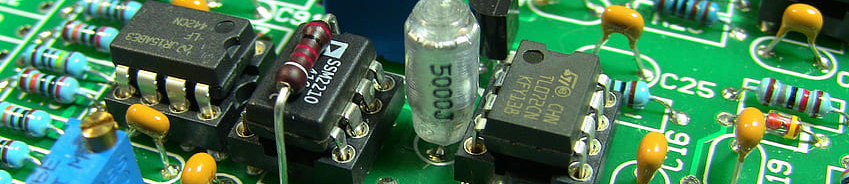
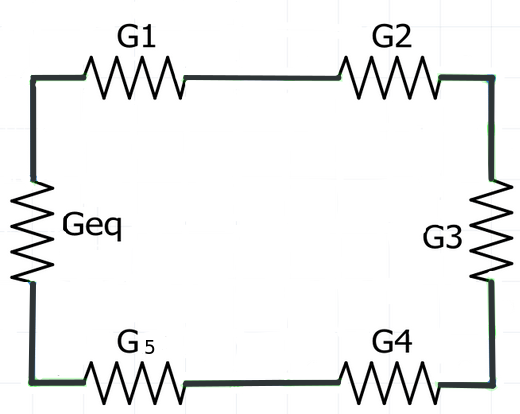

Parte 1 - Fundamentos
Parte 2 - Componentes de un circuito / Ley de Ohm
Pregunta 1
Responda las preguntas 2, 3, 4 y 5 con la información de la siguiente imagen.
Pregunta 2
Pregunta 3
Pregunta 4
Pregunta 5
Responda las preguntas 6 y 7 con la información de la siguiente imagen.
Pregunta 6
Modifique el código para obtener la resistencia equivalente
requiv en Ohms para el circuito de la imagen.
r1 <- 220
r2 <- 62
r3 <- 330
r4 <-
r5 <-
requiv <- r1+r2+r3r1 <- 220
r2 <- 62
r3 <- 330
r4 <- r4*10^3
r5 <- r5*10^3
requiv <- r1+r2+r3...r1 <- 220
r2 <- 62
r3 <- 330
r4 <- r4*10^3
r5 <- r5*10^3
requiv <- r1+r2+r3+r4...Pregunta 7
Cacule la corriente iser que pasa por la resistencia
equivalente del circuito de la imagen. Haga uso de la consola de R para
modificar el código y obtener la respuesta.
#V1 <- iser*requivPista: La ley de Ohm para la corriente está definida como I = V/R.
Responda las siguientes preguntas basados en la siguiente imagen:
Pregunta 8
Pregunta 9
Pregunta 10
Escoja las afirmaciones que correspondan a la definición.
Responda las siguientes preguntas respecto de la imagen a continuación:
Pregunta 11
Modifique el código para calcular la resistencia equivalente entre R2=20\(\Omega\), R3=15\(\Omega\), R4=10\(\Omega\).
r4 <-
r2 <-
r3 <-
rparal <- 1/((1/r3)+)r4 <-
r2 <-
r3 <-
rparal <- 1/((1/r2)+(1/r3)+(1/r4))Pregunta 12
Use el código para calcular la Resistencia Equivalente Total del circuito, de la imagen.
reqtot <- rparal+R1Pregunta 13

Pregunta 14